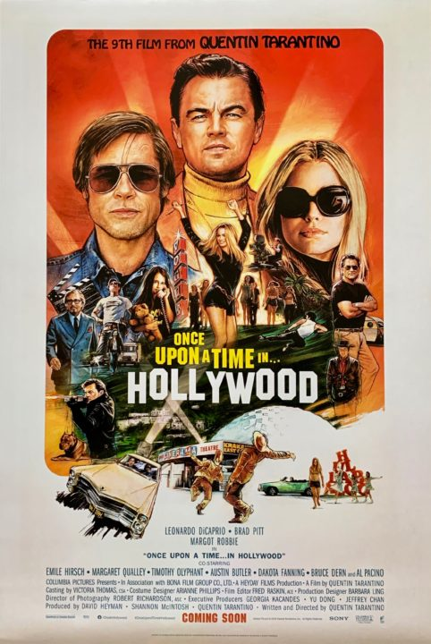
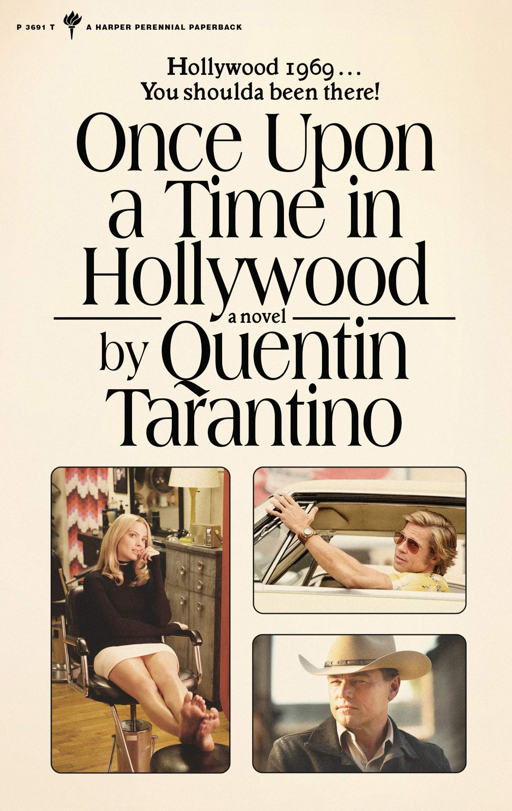

Once Upon a Time in Hollywood
While Once Upon a Time in Hollywood is Tarantino's last film released, it is one of the most important films in his career. Tarantino wrote this film so in-depth, that many of the characters backgrounds are not even shown or talked about in the film. Instead, he told the actors directly what their characters have been through in extensive detail. The main cast were given booklets about themselves to study and help get them into character. He also shot about five 20 minutes episodes of a series he made up for the series. However, these episodes are only previewed extremely briefly in the film. This also featured some of the biggest stars in Hollywood currently, and a lot of really obscure but endearing Hollywood callbacks. While this will go over most viewers heads, many Tarantino and hardcore movie fans will understand his sentiment and vision, as he grew up in the late 60s watching these stars and films he references. This film's budget was $90 million and grossed about $374.6 million.
In fact, Tarantino was so inspired by the story that he wrote his first novelization. While the reviews were mixed, a lot of fans appreciated the immense background on characters and stories. While this is his first book, he stated on the Joe Rogan Podcast he plans to make a few books and stage productions before his last feature film.
Notable Works
- True Romance (Writer)
- Natural Born Killers (story writer)
- From Dusk Till Dawn (Screenplay Writer)
- CSI: Crime Scene Investigation (Writer and Director of two episodes)
- ER (Writer of one episode)